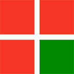
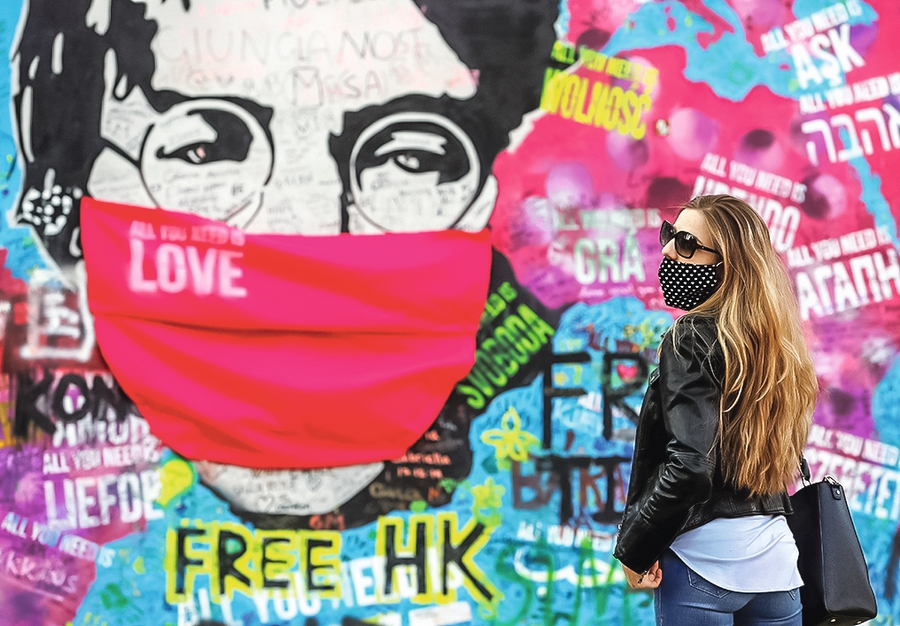
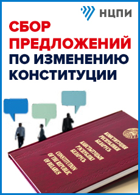
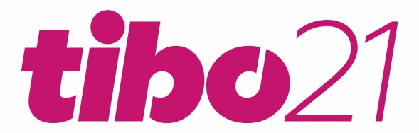

Как страны воюют за медицинские маски
Начальник управления внутренних дел Берлина Андреас Гизель обвинил США в «современном пиратстве».Двести тысяч масок, которые произвела в Таиланде американская компания 3М и которые были готовы к отправке в Германию, перехватили США.Президент Дональд Трамп раскритиковал компанию за то, что она продает маски другим странам.На основании закона, принятого во времена войны в Корее, США запретили компании 3M экспортировать продукцию медицинского назначения в другие страны.

По информации агентства Рейтер, министр здравоохранения Германии Йенс Шпан признался, что в Китае страны борются друг с другом, чтобы получить для себя маски, которые производятся в этой стране.Европа, по словам министра Шпана, способна сама производить средства защиты: «Здесь, в Германии, мы производим маски в небольших объемах, но мы производим машины для производства масок».
Французская газета «Либерасьон» опубликовала информацию о том, что большая партия масок, заказанная в Китае одним французским регионом и уже подготовленная к отправке, была перекуплена за большую цену американцами.Глава ассоциации регионов Франции Рено Мюзелье подтвердил агентству «Франс Пресс»: «Один глава региона сказал нам, что его заказ масок был перекуплен прямо в аэропорту американцами, которые заплатили втрое больше наличными», но отказался уточнить название региона и количество масок.
В марте «масочный» скандал разразился между Чехией и Италией.В Чехии на одном из таможенных складов в пользу государства экспроприировали большое количество защитных средств, чтобы предотвратить их вывоз за рубеж.Среди конфискованных товаров было 600 тысяч масок из Китая, предназначенных для Италии, причем они находились в четко промаркированных коробках с китайскими и итальянскими флагами.Несмотря на это, маски были конфискованы и распределены между медицинскими учреждениями Чехии.После того как в Италии разразился по этому поводу скандал, Чехии пришлось сначала долго извиняться, а потом и отправлять маски (уже другие) в Италию.
Партия масок, предназначенная для канадского Квебека, неожиданно оказалась в американском штате Огайо.Французское правительство наложило арест на половину масок, заказанных шведской компанией Mölnlycke и предназначенных для Италии и Испании.Солидарность?Нет, не слышали.
Posted On: 2020-04-07T21:00:00
Posted By: Инесса ПЛЕСКАЧЕВСКАЯ



Content Date: 2020-04-07
Download Date: 2021-12-24
Document ID: L0C04CRTB